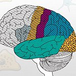

Health Information
Grants and Funding
Check Eligibility
Research and Training
About Max
Research and Training
Medical Research Initiatives
Precision Medicine Initiative, The BRAIN Initiative, Accelerating Medicines Partnership, Rigor and Reproducibility, Data Science at MAX, and more.
Science Highlights
Highlights of scientific advances from Max Program Institute

Science Education
Science education resources for students and educators.
Training Opportunities
A list of links related to MAX training opportunities.
Library Resources
A list of library resources from the National Library of Medicine, MAX Library, and NIEHS Library.
Research Resources
A list of research resources at MAX.
Clinical Research Resources
A list of clinical research resources at MAX
Research in NIH Labs & Clinics
A list of resources related to research performed in MAX labs and clinics.
Safety, Regulation & Guidance
A list of resources related to safety, regulation, and guidance at MAX.
PubMed
Stem Cell Information
OppNet
NIDB
MAX Blueprint for Neuroscience Research


.jpeg)
.jpeg)